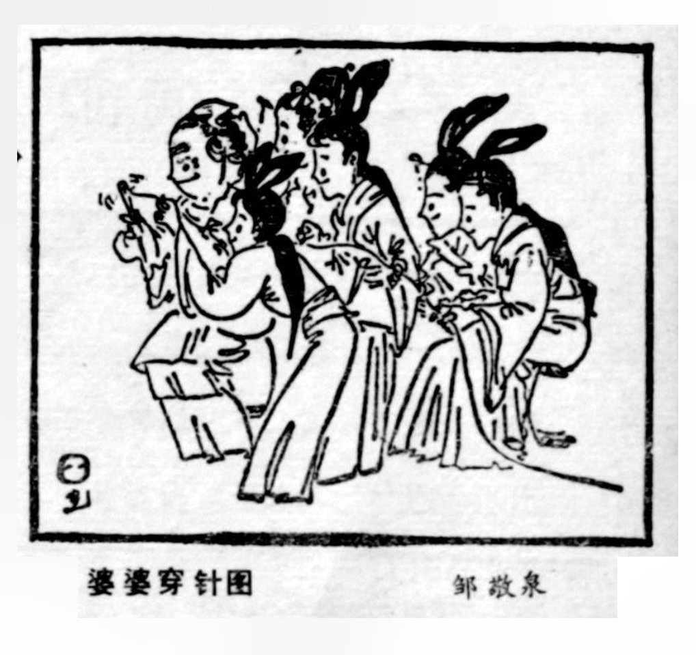

邹敬泉 《人事》1989年第9期（总第48期），封三
婆婆穿针图
Mothers-in-Law Threading a Needle
- Description
- Drawn like an old New Year print, a crowd of women in antique robes jostle round a single needle that one grinning matron holds up to the light, all reaching for the same thread.
- Note
- 婆婆, “mother-in-law,” was 1980s slang for the many supervising departments that each claimed authority over an enterprise (婆婆多, “too many mothers-in-law”). The image parodies prints of the Qixi festival custom in which women competed to thread needles.
- Artist
- Zou Jingquan 邹敬泉
- Published in
- 《人事》1989年第9期（总第48期）, inside back cover
- Themes
- Bureaucratism · Overstaffing and overlapping agencies

Cite
Zou Jingquan, “婆婆穿针图” [Mothers-in-Law Threading a Needle], Renshi (Personnel) 《人事》, 1989, no. 9, inside back cover.